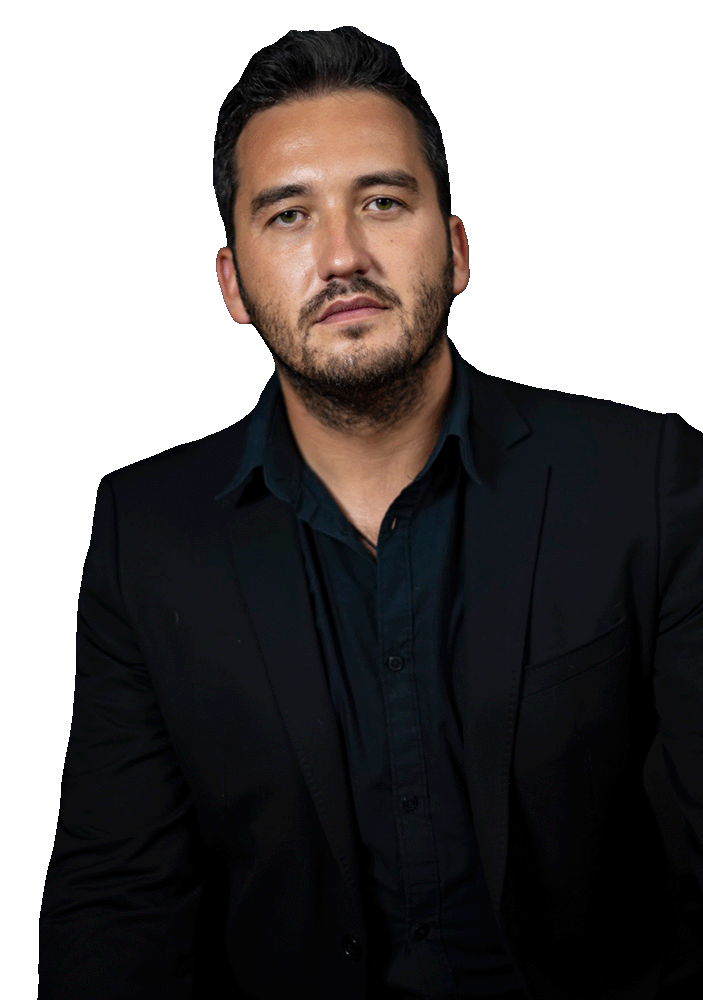

<div class="flex center" id="page-three">
    <div class="third-2 space">
        <div class="flex gap-3">
            <div id="services">
                <h4>What I do</h4>
                <ul>
                    <li>User Experience Research, User Interface Design & Prototyping</li>
                    <li>Brand and Identity Design</li>
                    <li>Motion Design, Video Production & vFX</li>
                    <li>Front-end Development</li>
                    <li>Instructional Design</li>
                </ul>
            </div>
            <div id="portfolio">
                <h4>portfolioed with</h4>
                <ul>
                    <li><a href="http://www.voith.com" target="_blank">J.M. VOITH</a></li>
                    <li><a href="http://www.maat.pt" target="_blank">MAAT Museum</a></li>
                    <li><a href="https://www.ordemdospsicologos.pt" target="_blank">Portuguese Psychologists Association</a></li>
                    <li><a href="http://www.ionline.pt" target="_blank">Jornal i</a></li>
                    <li><a href="http://www.ulusiada.pt" target="_blank">Lusíada University of Lisbon</a></li>
                </ul>
            </div>
        </div>
    </div>

    <div class="half profile_photo">
        <!--  -->
    </div>

    <div id="contacts">
        <div>
            <a id="mail" href="mailto:arcadiy.kulchinskiy@gmail.com">arcadiy.kulchinskiy@gmail.com</a>
            <a id="tel" href="tel:00351919731902">+351 919 731 902</a>
        </div>
        <div>
            <a id="in" href="http://www.linkedin.com/in/akulchinskiy">/in/akulchinskiy</a>
            <a id="be" href="http://behance.com/kulchinskiy">/kulchinskiy</a>
        </div>
    </div>

</div>